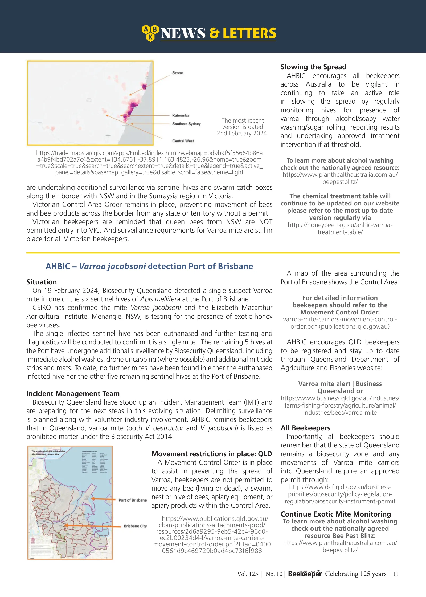

NEWS & LETTERS
Situation
On 19 February 2024, Biosecurity Queensland detected a single suspect Varroa
mite in one of the six sentinel hives of Apis mellifera at the Port of Brisbane.
CSIRO has confirmed the mite Varroa jacobsoni and the Elizabeth Macarthur
Agricultural Institute, Menangle, NSW, is testing for the presence of exotic honey
bee viruses.
The single infected sentinel hive has been euthanased and further testing and
diagnostics will be conducted to confirm it is a single mite. The remaining 5 hives at
the Port have undergone additional surveillance by Biosecurity Queensland, including
immediate alcohol washes, drone uncapping (where possible) and additional miticide
strips and mats. To date, no further mites have been found in either the euthanased
infected hive nor the other five remaining sentinel hives at the Port of Brisbane.
Incident Management Team
Biosecurity Queensland have stood up an Incident Management Team (IMT) and
are preparing for the next steps in this evolving situation. Delimiting surveillance
is planned along with volunteer industry involvement. AHBIC reminds beekeepers
that in Queensland, varroa mite (both V. destructor and V. jacobsoni) is listed as
prohibited matter under the Biosecurity Act 2014.
Movement restrictions in place: QLD
A Movement Control Order is in place
to assist in preventing the spread of
Varroa, beekeepers are not permitted to
move any bee (living or dead), a swarm,
nest or hive of bees, apiary equipment, or
apiary products within the Control Area.
https://www.publications.qld.gov.au/
ckan-publications-attachments-prod/
resources/2d6a9295-9eb5-42c4-96d0-
ec2b00234d44/varroa-mite-carriers-
movement-control-order.pdf?ETag=0400
0561d9c469729b0ad4bc73f6f988
AHBIC – Varroa jacobsoni detection Port of Brisbane
are undertaking additional surveillance via sentinel hives and swarm catch boxes
along their border with NSW and in the Sunraysia region in Victoria.
Victorian Control Area Order remains in place, preventing movement of bees
and bee products across the border from any state or territory without a permit.
Victorian beekeepers are reminded that queen bees from NSW are NOT
permitted entry into VIC. And surveillance requirements for Varroa mite are still in
place for all Victorian beekeepers.
Slowing the Spread
AHBIC encourages all beekeepers
across Australia to be vigilant in
continuing to take an active role
in slowing the spread by regularly
monitoring
hives
for
presence
of
varroa through alcohol/soapy water
washing/sugar rolling, reporting results
and undertaking approved treatment
intervention if at threshold.
To learn more about alcohol washing
check out the nationally agreed resource:
https://www.planthealthaustralia.com.au/
beepestblitz/
The chemical treatment table will
continue to be updated on our website
please refer to the most up to date
version regularly via
https://honeybee.org.au/ahbic-varroa-
treatment-table/
A map of the area surrounding the
Port of Brisbane shows the Control Area:
For detailed information
beekeepers should refer to the
Movement Control Order:
varroa-mite-carriers-movement-control-
order.pdf (publications.qld.gov.au)
AHBIC encourages QLD beekeepers
to be registered and stay up to date
through Queensland Department of
Agriculture and Fisheries website:
Varroa mite alert | Business
Queensland or
https://www.business.qld.gov.au/industries/
farms-fishing-forestry/agriculture/animal/
industries/bees/varroa-mite
All Beekeepers
Importantly, all beekeepers should
remember that the state of Queensland
remains a biosecurity zone and any
movements of Varroa mite carriers
into Queensland require an approved
permit through:
https://www.daf.qld.gov.au/business-
priorities/biosecurity/policy-legislation-
regulation/biosecurity-instrument-permit
Continue Exotic Mite Monitoring
To learn more about alcohol washing
check out the nationally agreed
resource Bee Pest Blitz:
https://www.planthealthaustralia.com.au/
beepestblitz/
https://trade.maps.arcgis.com/apps/Embed/index.html?webmap=bd9b9f5f55664b86a
a4b9f4bd702a7c4&extent=134.6761,-37.8911,163.4823,-26.96&home=true&zoom
=true&scale=true&search=true&searchextent=true&details=true&legend=true&active_
panel=details&basemap_gallery=true&disable_scroll=false&theme=light
The most recent
version is dated
2nd February 2024.
Vol. 125 | No. 10 |
Celebrating 125 years | 11